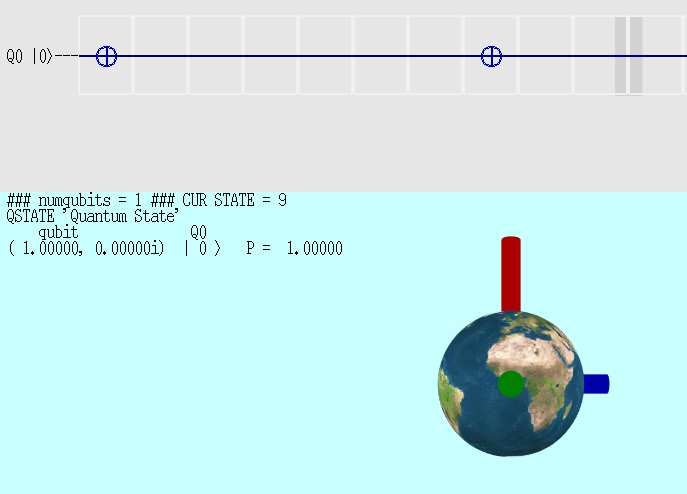
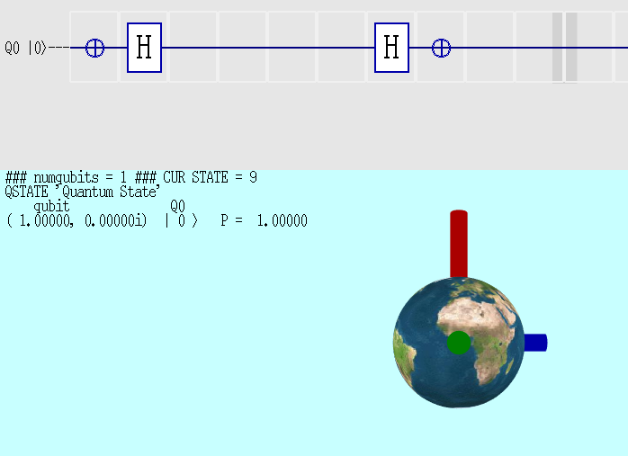
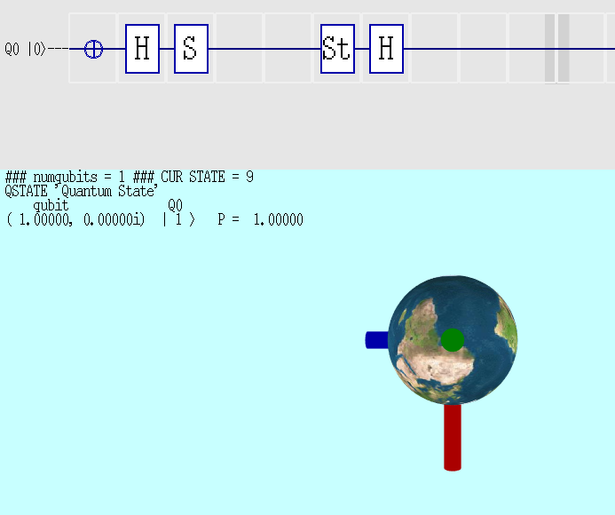
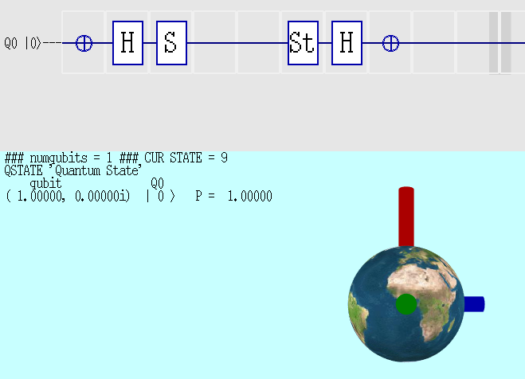

The purpose of this article is to show how to convert a Mermin magic square to very simple quantum gates using just Hadamard, Not, Cnot and Swap to construct 6 different measurement circuits, 3 for Alice and 3 for Bob.
When I was studying quantum computers, I came across this Wikipedia article about Quantum_pseudo-telepathy It sorta made sense, but I couldn't figure out how to make quantum circuits out of the measurements of the magic square. I then found Craig Gidney's article on the Twisted Oak website Implementing Quantum Pseudo-Telepathy He successfully generated some circuits using brute force. It had some gates like DEC and Sqrt-Not (different than Wikipedia's Sqrt-Not).
This inspired me to build a quantum computer and study these and many other circuits. The game worked perfectly with Craig's gates. After about 9 months I had a flash of inspiration, I figured out how to build quantum gates that can measure the magic square!
Also we'll convert from Wikipedia's +,- based game to Craig's coin based game.
Let's start.
Make +Sz
Red axis pointing up
Do nothing since qubit is already initialized as +Sz
Make -Sz
Red axis pointing down
Flip qubit with NOT or PX, same thing
Make +Sx
Red axis pointing closer
Hadamard will move from +Sz to +Sx
Make -Sx
Red axis pointing away, can't see red axis
Flip qubit with PX, Hadamard will move from -Sz to -Sx
Make +Sy
Red axis pointing right
Hadamard will move from +Sz to +Sx, S will move to +Sy
Make -Sy
Red axis pointing left
Flip qubit with PX, Hadamard will move from -Sz to -Sx, S will move to -Sy
Measure
| Sz |
Make +Sz and measure +Sz
Should get Q0 = |0> or +1
This is the computational basis of measurement
Make -Sz and measure +Sz Should get Q0 = |1> or -1
Measure
| −Sz |
Make +Sz and measure -Sz Should get Q0 = |1> or -1
Make -Sz and measure -Sz Should get Q0 = |0> or +1
Measure
| Sx |
Make +Sx and measure +Sx
Should get Q0 = |0> or +1
To measure other states
Convert what to measure to Sz state
Usually by undoing how
to make this state
Example to measure Sx, use a Hadamard
Make -Sx and measure +Sx Should get Q0 = |1> or -1
Measure
| −Sx |
Make +Sx and measure -Sx Should get Q0 = |1> or -1
Make -Sx and measure -Sx Should get Q0 = |0> or +1
Measure
| Sy |
Make +Sy and measure +Sy Should get Q0 = |0> or +1
Make -Sy and measure +Sy Should get Q0 = |1> or -1
Measure
| −Sy |
Make +Sy and measure -Sy Should get Q0 = |1> or -1
Make -Sy and measure -Sy Should get Q0 = |0> or +1
Measure
| I |
or
| −I |
Means don't measure
Q0 untouched and measurement result is
always +1 for I or -1 for -I
First we take from Wikipedia
| Sx ⊗ I | Sx ⊗ Sx | I ⊗ Sx |
| −Sx ⊗ Sz | Sy ⊗ Sy | −Sz ⊗ Sx |
| I ⊗ Sz | Sz ⊗ Sz | Sz ⊗ I |
Now arrange the rows and columns so the more complicated Sy*Sy is in the lower right. This doesn't effect the game.
| I ⊗ Sx | Sx ⊗ I | Sx ⊗ Sx |
| Sz ⊗ I | I ⊗ Sz | Sz ⊗ Sz |
| −Sz ⊗ Sx | −Sx ⊗ Sz | Sy ⊗ Sy |
Now convert the game from +,- to coin based game by negating all of Bob's measurements.
Both Alice and Bob will make 3 measurements, the last measurement comes from XORing the first 2 measurements. This means Alice and Bob measure an even number of +'s
Alice measures horizontally
| I ⊗ Sx | Sx ⊗ I | Sx ⊗ Sx |
| Sz ⊗ I | I ⊗ Sz | Sz ⊗ Sz |
| −Sz ⊗ Sx | −Sx ⊗ Sz | Sy ⊗ Sy |
Bob measures vertically, negated
| −I ⊗ Sx | −Sx ⊗ I | −Sx ⊗ Sx |
| −Sz ⊗ I | −I ⊗ Sz | −Sz ⊗ Sz |
| Sz ⊗ Sx | Sx ⊗ Sz | −Sy ⊗ Sy |
Measure Alice's top row
| I ⊗ Sx | Sx ⊗ I | Sx ⊗ Sx |
3 measurements all commute, no uncertainty
Left cell, measure Q1 in X, output to Q0
Middle cell, measure Q0 in X, output to Q1
This can be done with 2 Hadamards and a Swap
Right cell, measure Q0X and Q1X pointing in same direction
Remember |0> is the same as +1, |1> is the same as -1
To get the Right cell measurement, xor (|0>, |1>) OR multiply +1,-1 together
Or before measurement, use a CNOT to xor the 2 qubits together

Make Sx*Sx and measure, should get +1,+1

Make Sx*-Sx and measure, should get -1,+1

Make -Sx*Sx and measure, should get +1,-1

Make -Sx*-Sx and measure, should get -1,-1
Measure Alice's middle row

| Sz ⊗ I | I ⊗ Sz | Sz ⊗ Sz |
3 measurements all commute, no uncertainty
Left cell, measure Q0 in Z, output to Q0
Middle cell, measure Q1 in Z, output to Q1
This can be done with... nothing! Just how simple can some of this stuff get
Right cell, measure Q0Z and Q1Z pointing in same direction
To get the Right cell measurement, xor (|0>, |1>) OR multiply +1,-1 together
Or before measurement, use a CNOT to xor the 2 qubits together

Make Sz*Sz and measure, should get +1,+1

Make Sz*-Sz and measure, should get +1,-1

Make -Sz*Sz and measure, should get -1,+1

Make -Sz*-Sz and measure, should get -1,-1
Measure Alice's bottom row

| −Sz ⊗ Sx | −Sx ⊗ Sz | Sy ⊗ Sy |
3 measurements all commute, no uncertainty
Left cell, measure -Q0Z*Q1X, output to Q0
Middle cell, measure -Q0X*Q1Z, output to Q1
This can be done with, use Bob's right column with 1 more Hadamard to flip Q0 X <==> Z,
read below
Right cell, measure Q0Y*Q1Y pointing in same direction
To get the Right cell measurement, xor (|0>, |1>) OR multiply +1,-1 together
Or before measurement, use a CNOT to xor the 2 qubits together

Make Sz*Sx and measure to Q0, should get -1,?

Make Sz*-Sx and measure to Q0, should get +1,?

Make -Sz*Sx and measure to Q0, should get +1,?

Make -Sz*-Sx and measure to Q0, should get -1,?

Make Sx*Sz and measure to Q1, should get ?,-1

Make Sx*-Sz and measure to Q1, should get ?,+1

Make -Sx*Sz and measure to Q1, should get ?,+1

Make -Sx*-Sz and measure to Q1, should get ?,-1

Extra credit Make Sy*Sy and measure Sy*Sy by using CNOT (xor) to target Q0, should get +1,?

Extra credit Make Sy*-Sy and measure Sy*Sy by using CNOT (xor) to target Q0, should get -1,?

Extra credit Make -Sy*Sy and measure Sy*Sy by using CNOT (xor) to target Q0, should get -1,?

Extra credit Make -Sy*-Sy and measure Sy*Sy by using CNOT (xor) to target Q0, should get +1,?
Measure Bob's left column

| −I ⊗ Sx |
| −Sz ⊗ I |
| Sz ⊗ Sx |
3 measurements all commute, no uncertainty
Top cell, measure Q1 in -X, output to Q0
Middle cell, measure Q0 in -Z, output to Q1
This can be done with 1 Hadamard, a Swap and 2 NOTs
Bottom cell, measure Q0Z and Q1X pointing in same directions
Remember |0> is the same as +1, |1> is the same as -1
To get the Bottom cell measurement, xor (|0>, |1>) OR multiply +1,-1 together
Or before measurement, use a CNOT to xor the 2 qubits together

Make Sz*Sx and measure, should get -1,-1

Make Sz*-Sx and measure, should get +1,-1

Make -Sz*Sx and measure, should get -1,+1

Make -Sz*-Sx and measure, should get +1,+1
Measure Bob's middle column

| −Sx ⊗ I |
| −I ⊗ Sz |
| Sx ⊗ Sz |
3 measurements all commute, no uncertainty
Top cell, measure Q0 in -X, output to Q0
Middle cell, measure Q1 in -Z, output to Q1
This can be done with 1 Hadamard and 2 NOTs
Bottom cell, measure Q0X and Q1Z pointing in the same direction
To get the Bottom cell measurement, xor (|0>, |1>) OR multiply +1,-1 together
Or before measurement, use a CNOT to xor the 2 qubits together

Make Sx*Sz and measure, should get -1,-1

Make Sx*-Sz and measure, should get -1,+1

Make -Sx*Sz and measure, should get +1,-1

Make -Sx*-Sz and measure, should get +1,+1
Measure Bob's right column

| −Sx ⊗ Sx |
| −Sz ⊗ Sz |
| −Sy ⊗ Sy |
3 measurements all commute, no uncertainty
Top cell, measure -Q0X*Q1X, output to Q0
Middle cell, measure -Q0Z*Q1Z, output to Q1
This can be done with a CNOT targeting Q1 to get Sz*Sz on Q1
then a NOT to make it -Sz*Sz
Using 4 Hadamard CNOT gate conversion rule
we can just add 1 more Hadamard to the top get Sx*Sx on Q0
then a NOT to make it -Sx*Sx on Q0
Bottom cell, measure -Q0Y*Q1Y pointing in opposite directions
To get the Bottom cell measurement, xor (|0>, |1>) OR multiply +1,-1 together
Or before measurement, use a CNOT to xor the 2 qubits together

Make Sx*Sx and measure to Q0, should get -1,?

Make Sx*-Sx and measure to Q0, should get +1,?

Make -Sx*Sx and measure to Q0, should get +1,?

Make -Sx*-Sx and measure to Q0, should get -1,?

Make Sz*Sz and measure to Q1, should get ?,-1

Make Sz*-Sz and measure to Q1, should get ?,+1

Make -Sz*Sz and measure to Q1, should get ?,+1

Make -Sz*-Sz and measure to Q1, should get ?,-1

Extra credit Make Sy*Sy and measure -Sy*Sy by using CNOT (xor) to target Q0, should get -1,?

Extra credit Make Sy*-Sy and measure -Sy*Sy by using CNOT (xor) to target Q0, should get +1,?

Extra credit Make -Sy*Sy and measure -Sy*Sy by using CNOT (xor) to target Q0, should get +1,?

Extra credit Make -Sy*-Sy and measure -Sy*Sy by using CNOT (xor) to target Q0, should get -1,?
Split 2 pairs of entangled Qubits and send each half to Alice and Bob.
Common entangled Alice-row Bob-column cells should measure opposite values
since their measurements are
exactly opposite.
Also all measurements are even.
This is all you need to win the game.

Run Alice top, Bob left
Notice how Q0 and Q2 are anti-correlated for all possible measurements

Run Alice top, Bob middle
Notice how Q1 and Q2 are anti-correlated for all possible measurements

Run Alice top, Bob right
Notice how (Q0 xor Q1) and Q2 are anti-correlated for all possible measurements

Run Alice middle, Bob left
Notice how Q0 and Q3 are anti-correlated for all possible measurements

Run Alice middle, Bob middle
Notice how Q1 and Q3 are anti-correlated for all possible measurements

Run Alice middle, Bob right
Notice how (Q0 xor Q1) and Q3 are anti-correlated for all possible measurements

Run Alice bottom, Bob left
Notice how Q0 and (Q2 xor Q3) are anti-correlated for all possible measurements

Run Alice bottom, Bob middle
Notice how Q1 and (Q2 xor Q3) are anti-correlated for all possible measurements

Run Alice bottom, Bob right
Notice how (Q0 xor Q1) and (Q2 xor Q3) are anti-correlated for all possible measurements
I hope this article helped explain some of the mysteries of Quantum pseudo telepathy. I guess I'll have to throw out Einstein's pair of gloves.
Comments? Suggestions? Shoot me an email. Still works!